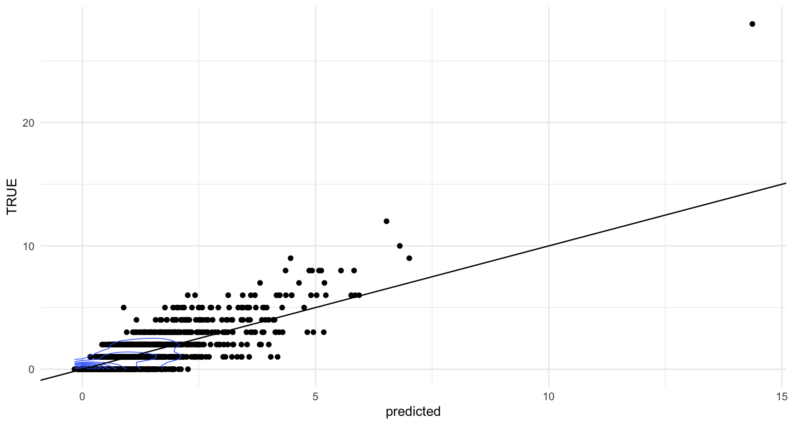
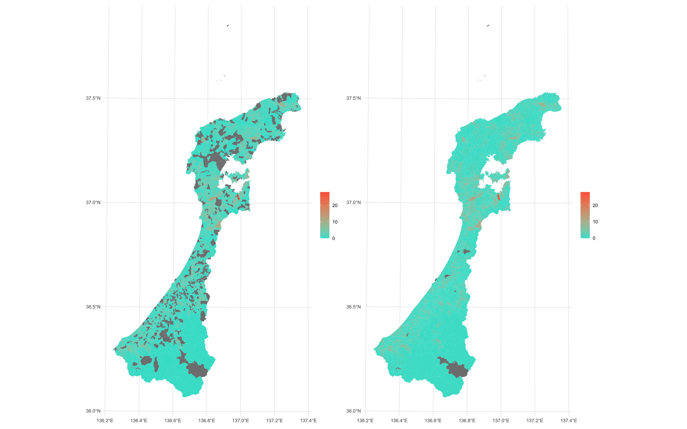

{agribbit2}は簡単に農林業センサスデータを取得するために開発されたR言語のパッケージです．
農林業センサスは国勢調査同様，5年に1度行われている調査です．
農林業センサスは日本の農業の状況を把握するのに有用なデータなのですが，データの取得や整形が面倒なのが難点です．また欠損値も目立ちます．
{agribbit2}は農林業センサスデータ（シェープファイルも）の取得を自動化するとともに，ガウス過程による欠損値補完，変数整形を行うパッケージです．
これにより，農林業に関する研究の障壁が下がると嬉しいです．
なお{agribbit}という名称ですが，agricultureとribbitを重ねて命名しました．ribbitとは英語圏におけるカエルの鳴き声を表現する単語のようです．
日本でいうところの「ゲロゲロ」とか「ゲコゲコ」とかに当たるものです．カエル，好きなので．
# installation
devtools::install_github("Ymgc19/agribbit2")
石川県の農林業センサスデータを取得し，欠損値補完と変数の整形を行い，地図で描画するまでを紹介します．
農林業センサスの統計データを取得するにはagribbit2::agri.read_census_2020とかagribbit2::agri.read_census_2015を使います．
引数には取得したい都道府県の，都道府県コードを指定します．
今回は石川県のデータを取得したいので，石川県の都道府県コード17を指定します．
# 石川県の統計データを取得
ishikawa_census <- agribbit2::agri.read_census_2020(17)
ishikawa_census %>% glimpse() # 確認
次に，このデータフレームの重要な変数（個人的に重要だと思ったもの）の欠損値を補完します．その際にガウス過程回帰を用います．
ガウス過程回帰は「入力が似ていれば出力も似る」という直感的な数学的背景があります．
欠損の少ない変数で組んだカーネル行列（地域間の性質の近さを計るもの）をもとにして，欠損値を予測します．
ガウス過程回帰の詳しい話は『ガウス過程と機械学習』を読んでください．
私はこれを読んで学びました．
このパッケージでは，農業人口，寄り合いの開催回数，地域資源の保全状況などの欠損の少ない変数を手掛かりにして，欠損値を予測しています．
予測の出力は確率分布（ガウス分布）として与えられます．平均値（つまりはガウス分布の中心）の値を予測値として補完に用いました．
使用する関数はagribbit2::agri.interpolate_importants(thin = n)です．
引数thin = nは学習に用いるデータをn個飛ばしにして，計算コストを減らすものです．
1にすれば全てのデータを用いることになり，2にすれば2個に1個のデータを学習に用いることになります．
本当は補助変数法などのもっとちゃんとした計算コスト削減方法があると思うのですが，{agribbit2}内で使用している{kernlab}パッケージでそのような手法を用いる術がわからず，このような下品なやり方をとっています．
それからハイパーパラメタのチューニングはsigestという{kernlab}に組み込まれたアルゴリズムをそのまま用いています．
thinを指定しなければデフォルトで2になります．しかし，計算コストが大きくなっても良い方はthin = 1としてください．
# 欠損値の補完
ishikawa_census_inputed <- ishikawa_census %>%
agribbit2::agri.interpolate_importants(thin = 1)
ishikawa_census_inputed %>% glimpse() # 確認
agribbit2::agri.interpolate()を使ってください．
たとえば，1年間に60-99日農林業に従事する人の欠損値（T001063012）を予測するには，
# T001063012をピンポイントで補完
hoge <- agribbit2::agri.interpolate(ishikawa_census, target = "T001063012")
# 補完後のデータフレーム（inputed_T001063012）という変数が補完後のT001063012
hoge$inputed %>% glimpse()
# 補完された値の基本情報
hoge$predicted_summary
# 学習のsummary
hoge$fit
# 学習結果の可視化（予測値と真値の散布図）
# 点が一点に集中している場合は，geom_density_2d()がうまく作動しないため画像は表示できない
hoge$true.vs.predicted
今回補完を試みた変数（T001063012）の予測値と真値（欠損していないもの）の関係を散布図にしたものは，以下のようになります． 予測の精度は，まあ，こんなもんです……．すごくいいとは言い難い．
次に，補完したデータフレームを用いて，変数を整形します．平均年齢や，平均収入，地域資源の保全割合などの変数を作成します． 変数を作成する際に，あり得ない突飛な値になる地域が出る場合があります．これは欠損地補完によって生成された変数がある地域に起こります． 突飛な値がなるべく出ないようにコード上で調整していますが，あくまで便宜的な操作です． ゆえに，この関数で生成された変数を実際の分析で用いるのはそこまでオススメではありません． 生成した変数が現実的な値になっているかどうかをちゃんと確認してください！ 絶対に！
次に，空間データを取得してみましょう．
使用する関数はagribbit2::agri.read_census_shp()です．同じく引数には都道府県コードを入れます．
今回は例によって17です．
# 空間データの取得
ishikawa_shp <- agribbit2::agri.read_census_shp(17)
ishikawa_shp %>% glimpse() # 確認
left_join()などを使うと良いでしょう．
# データ結合
ishikawa_census_inputed_fe_shp <- left_join(
ishikawa_shp, ishikawa_census_inputed_fe, by = "KEY_CODE"
)
ishikawa_census_inputed_fe_shp %>% glimpse() # 確認
最後にデータを描画してみましょう．
まずは，先ほど欠損値を補完した変数（年間に60-99日農林業に従事する人数: T001063012）を地図にしてみます．
その際に欠損値を補完する前の状態と，欠損を補完した後の状態をそれぞれ描画してみます．
# 欠損値を補完する前のデータを描画（before）
before <- ishikawa_census_inputed_fe_shp %>%
ggplot() +
geom_sf(
aes(fill = as.numeric(T001063012)),
color = NA
) +
scale_fill_gradient(low = "turquoise", high = "tomato") +
labs(fill = "") +
theme_minimal()
# T001063012の欠損値を補完したデータフレームを作成（inputedとする）
hoge <- agribbit2::agri.interpolate(ishikawa_census, target = "T001063012")
inputed <- hoge$inputed %>%
mutate(KEY_CODE = as.numeric(KEY_CODE)) # 欠損値を補完したデータフレーム
# 描画(after)
after <- ishikawa_census_inputed_fe_shp %>%
left_join(., inputed, by = "KEY_CODE") %>%
ggplot() +
geom_sf(
aes(fill = inputed_T001063012),
color = NA
) +
scale_fill_gradient(low = "turquoise", high = "tomato") +
labs(fill = "") +
theme_minimal()
# 並べて描画
library(patchwork)
before + after
左側が欠損を補完する前の「年間60-99日農林業に従事する人数」で，右側が補完した後のものです．だいぶ穴ボコが減っているのがわかります．

最後にagribbit2::agri.fast_draw()を使った描画を紹介します．
第1引数にはデータフレーム名，第2引数にはデータフレーム名$変数名を指定してください．うーん．引数の指定の仕方が若干キモいですね．
1年以上前に作ったときには「動きゃいいか！」というモチベだったので．ごめんなさい．
寄り合いの議題数を描画してみます．
# 簡単な描画
p1 <- agribbit2::agri.fast_draw(ishikawa_census_inputed_fe_shp,
ishikawa_census_inputed_fe_shp$fe_yoriai) +
labs(x = "", y = "")
一応色変えもできます．黄色と緑にしてみます．
# 簡単な描画．色変え
p2 <- agribbit2::agri.fast_draw(ishikawa_census_inputed_fe_shp,
ishikawa_census_inputed_fe_shp$fe_yoriai,
fill_low = "yellow", fill_high = "seagreen3") +
labs(x = "", y = "")
描画した結果は以下です．左がp1，右がp2です．まあ，この関数はそんなに重要ではないですね．
簡単に変数の空間的な分布を確認したいときには活躍するかもしれませんが，論文の載せるような手の込んだ図を作りたいときには，ggplot() +で自分で1から図をカスタマイズしていくのが良いと思います．
そっちの方が楽しいですし．
このパッケージの前身である{agribbit}はWindows環境でうまく作動しない部分がありました． その問題の解決に役立つヒントを山口大学の杉野弘明先生から頂戴しました． 杉野先生のおかげでWindows環境でも動作するパッケージとすることができました． 感謝申し上げます．ありがとうございました！
Email: yuhei.yamaguchi.t1@dc.tohoku.ac.jp
𝕏
Instagram
Github
RPubs